Mensuration
128.
The diagram shows a gold bar, which is a prism of length 40 cm.
(a) Find the area of the cross-section.
(a) ......................... cm2 [2]
(b) Find the volume of the gold bar.
(b) ......................... cm3 [1]
Paper 2
129.
The diagram shows a three-tiered-cake made up of three different flavours.
The tiers have different diameters and heights.
(a) The fruit cake has a diameter of 30 cm and a height of 10 cm.
Find the volume of the fruit cake, in terms of π.
The tiers have different diameters and heights.
Find the volume of the fruit cake, in terms of π.
(a) ......................... cm3 [2]
(b) The carrot cake has 30% less volume than the fruit cake. Calculate the volume of the carrot cake, in terms of π.
(b) ......................... cm3 [2]
(c) The diameter of the carrot cake is 2 cm less than the fruit cake. Find the height of the carrot cake. Leave your answer as a fraction.
(c) ......................... cm [2]
Paper 2
130.
Two solid spheres of radii 2 cm and 4 cm, respectively, are melted and recast to form a cone of height 8 cm.
,
Find the radius of the cone.
,
Find the radius of the cone.
Radius = ......................... cm [3]
Paper 2
131.
The diagram shows a side view of a slice of a cylindrical cake.
The top of the slice is a sector of angle while the side is a rectangle of dimensions 24 cm by 20 cm as shown.
(a) Show that the arc length of the top is 5π.
The top of the slice is a sector of angle while the side is a rectangle of dimensions 24 cm by 20 cm as shown.
(a) ......................... [2]
(b) Leaving your answer in terms of π, find the surface area of the slice excluding the top and the base.
(b) ......................... cm2 [3]
Paper 2
132.
The diagram shows a prism.
The cross-section of the prism consists of a rectangle and a semi-circle.
Work out, leaving your answer in terms of π:
(a) the area of the cross-section,
The cross-section of the prism consists of a rectangle and a semi-circle.
(a) the area of the cross-section,
(a) ......................... cm2 [3]
(b) The volume of the prism.
(b) ......................... cm3 [1]
Paper 2
133.
The diagram shows two similar cylindrical cans. Their heights are as shown.
(a) If the diameter of the smaller can is 6 cm, calculate the diameter of the larger can.
(a) ......................... cm [2]
(b) The volume of the smaller can is 90π cm3. Find the volume of the larger can, leaving your answer in terms of π.
(b) ......................... cm3 [2]
Paper 2
134.
The diagram shows two similar coffee mugs. The large mug holds 500 cm3 of coffee.
(a) How many full large mugs would be required to fill a 1 m3 container?
(a) ......................... [2]
(b) The small mug holds 32 cm3 of coffee.
(i) Find the scale factor for the length between the small and large mug. Give your answer as an exact fraction.
(i) Find the scale factor for the length between the small and large mug. Give your answer as an exact fraction.
(b)(i) ......................... [2]
(ii) The height of the large mug is 15 cm. Work out the height of the small mug.
(b)(ii) ......................... cm [2]
(iii) The surface area of the large mug is 350 cm2. Work out the surface area of the small mug.
(b)(iii) ......................... cm2 [2]
Paper 2
135.
Puleng uses the conically shaped container, as shown in the diagram, to measure morvite (lepoopo).
The cone has a radius and height 10 cm.
,
(a) Work out the volume of lepoopo that can fill up the container. Give your answer as a multiple of π.
The cone has a radius and height 10 cm.
,
(a) ......................... cm3 [2]
(b) The curved surface area of the container =
cm2. Find the value of k.
(b) k = ......................... [4]
(c) The container holds 30 g of lepoopo when it is full. Work out how much lepoopo 100 full containers can hold. Give your answer in kg.
(c) ......................... kg [1]
Paper 2
63.
The frustum shown in the diagram is formed by removing a cone of base radius 2 cm from a larger cone of base radius 6 cm.
The frustum is joined to a cylinder of height 18 cm and radius 6 cm to form a bottle as shown.
(a) Show that the volume of the cylindrical part of the bottle is 2036 cm3, correct to four significant figures.
The frustum is joined to a cylinder of height 18 cm and radius 6 cm to form a bottle as shown.
......................... [2]
(b) The volume of the larger cone is 679 cm3.
Calculate:
(i) The volume of the frustum,
Calculate:
(i) The volume of the frustum,
......................... cm3 [3]
(ii) The height of the empty space in the bottle if the volume of water inside the bottle is 2036 cm3.
......................... [3]
Paper 4
64.
The diagram shows a prism formed by removing 2 quadrant shaped prisms of radius 5 cm from a cube of length 10 cm.
(a) Find, in terms of π, the area of the cross-section (at the end) of the prism.
......................... cm3 [2]
(b) Calculate the volume of the prism.
......................... cm3 [1]
(c) Calculate the total surface area of the prism.
......................... cm2 [3]
Paper 4
65.
Neo builds toy towers using identical cylinders and cuboids.
A tower of height 38 cm is built from three cylinders and two cuboids as shown below.
Let x cm be the height of one cylinder and y cm be the height of one cuboid.
(a) Form an equation connecting x and y.
A tower of height 38 cm is built from three cylinders and two cuboids as shown below.
Let x cm be the height of one cylinder and y cm be the height of one cuboid.
......................... [2]
(b) Neo then builds the second tower of height 51 cm using two cylinders and five cuboids as shown.
This new information is represented by an equation 2y + 5y = 51.
Use the above equation and the one in (a) to find the height of a cylinder and a cuboid.
Use the above equation and the one in (a) to find the height of a cylinder and a cuboid.
Height of cylinder = ......................... cm Height of cuboid = ......................... cm [4]
Paper 4
66.
(a) Pule has 3 identical cuboids, each has length l cm and width w cm.
He places the 3 cuboids together on a flat surface to make the shape shown below.
The distance around the base of this shape is given by an equation 6l + 2w = 72, while the area of its base is given by an equation 3lw = 243.
(i) Using equations for the distance and the area, form an equation in w and show that it reduces to
.
He places the 3 cuboids together on a flat surface to make the shape shown below.
The distance around the base of this shape is given by an equation 6l + 2w = 72, while the area of its base is given by an equation 3lw = 243.
......................... [3]
(ii) Solve the equation in (b)(i).
w = ......................... or w = ......................... [2]
(iii) Find the length of the cuboid.
l = ......................... cm [2]
(iv) The height of the cuboid is 4 cm.
Calculate the volume of each cuboid.
Calculate the volume of each cuboid.
......................... cm2 [2]
(b) Pule places 6 cylinders on the three cuboids as shown.
The first row of cylinders leaves an equal distance of 4.5 cm on either side.
Find the diameter of each cylinder.
The first row of cylinders leaves an equal distance of 4.5 cm on either side.
......................... cm [2]
Paper 4
67.
The diagram shows 4 identical spherical balls packed into a box that is in the shape of a cuboid.
The spheres are packed so that they touch two other spheres and four faces of the box.
The radius of each sphere is 3 cm.
The volume V of a sphere radius r is .
(a) State the number of vertices a cuboid has.
The spheres are packed so that they touch two other spheres and four faces of the box.
The radius of each sphere is 3 cm.
The volume V of a sphere radius r is .
......................... [1]
(b) Calculate the volume of one ball.
......................... cm3 [2]
(c) Calculate the volume of the box.
......................... cm3 [2]
(d) Find the volume of unoccupied space in the box.
......................... cm3 [1]
(e) Find the percentage of the volume of the box that is not occupied by the balls.
......................... [2]
Paper 4
68.
The diagram shows a cylindrical container resting on a horizontal surface.
The container has radius 8 cm and length 30 cm.
The cylinder contains water to a depth of 12 cm.
(a) Show that the cross sectional area of one end of the container in contact with water is 162 cm2. Correct to three significant figures.
The container has radius 8 cm and length 30 cm.
The cylinder contains water to a depth of 12 cm.
......................... [4]
(b) Calculate the volume of water in the container.
......................... cm3 [3]
(c) The container is now placed upright on its circular base.
Calculate the height of the water in the container.
Calculate the height of the water in the container.
......................... cm [2]
(d) Water leaks from the container at a rate of 10 cm2 per second.
Calculate the time, in minutes and seconds, it takes the container to be emptied.
Calculate the time, in minutes and seconds, it takes the container to be emptied.
......................... minutes ......................... seconds [2]
Paper 4
69.
The diagram shows a container made by joining a cylinder of radius 0.33 m and a hemisphere of the same radius.
The length of the cylinder is 2 m.
The container rests on a horizontal surface and it is exactly half filled with water.
[The volume of a sphere is ]
[The surface area of a sphere is 4πr2]
(a) Calculate the surface area of the container that is in contact with the water.
The length of the cylinder is 2 m.
The container rests on a horizontal surface and it is exactly half filled with water.
[The volume of a sphere is ]
[The surface area of a sphere is 4πr2]
......................... m2 [4]
(b) The container is now completely filled with water.
Calculate the total volume, in litres, of water in the container.
Note: (1000 cm3 = 1 litre)
Calculate the total volume, in litres, of water in the container.
Note: (1000 cm3 = 1 litre)
......................... l [4]
(c) Water is taken from the container at the constant rate of 10 litres per minute.
Find the length of time needed to draw 300 litres of water from the container.
Find the length of time needed to draw 300 litres of water from the container.
......................... min [2]
Paper 4
70.
A metal sheet with volume 1080 cm3 is melted and recast into smaller cones of equal sizes.
Each cone has base circumference of 12 cm and slant height of 5 cm.
The volume of a cone of radius r and height h is .
(a) Calculate the volume of the cone.
Each cone has base circumference of 12 cm and slant height of 5 cm.
The volume of a cone of radius r and height h is .
(a) Calculate the volume of the cone.
......................... cm3 [5]
(b) Find the maximum number of cones that can be formed.
......................... cones [1]
Paper 4
71.
The diagram shows a tank in the shape of a cuboid.
(a) Calculate the volume of water that can fill up the tank.
......................... m3 [2]
(b) The outside surface of the tank is to be painted. (The top and bottom are not included.)
Calculate the area to be painted.
Calculate the area to be painted.
......................... m2 [3]
(c) 1 litre of paint covers 3 m2.
The cost of a 5 litre paint is M90.00.
(i) Find the number of 5 litre containers needed.
The cost of a 5 litre paint is M90.00.
(i) Find the number of 5 litre containers needed.
......................... [3]
(ii) Calculate the total cost of paint needed.
M ......................... [1]
Paper 4
72.
A "traffic cone" is made from a cone and a cuboid.
The cone has radius OQ = 20 cm and slant height QP = 61 cm.
The cuboid has a square base, of side 40 cm and height 18 cm.
(a) Sketch the net of the conical part of the "traffic cone".
The cone has radius OQ = 20 cm and slant height QP = 61 cm.
The cuboid has a square base, of side 40 cm and height 18 cm.
See diagram [1]
(b) How many planes of symmetry does the "traffic cone" have?
......................... [1]
(c) Calculate the total surface area of the "traffic cone".
Give your answer correct to the nearest hundred cm2.
(The curved surface area, A, of a cone with radius r and slant height l is A = πrl.)
Give your answer correct to the nearest hundred cm2.
(The curved surface area, A, of a cone with radius r and slant height l is A = πrl.)
......................... cm2 [7]
Paper 4